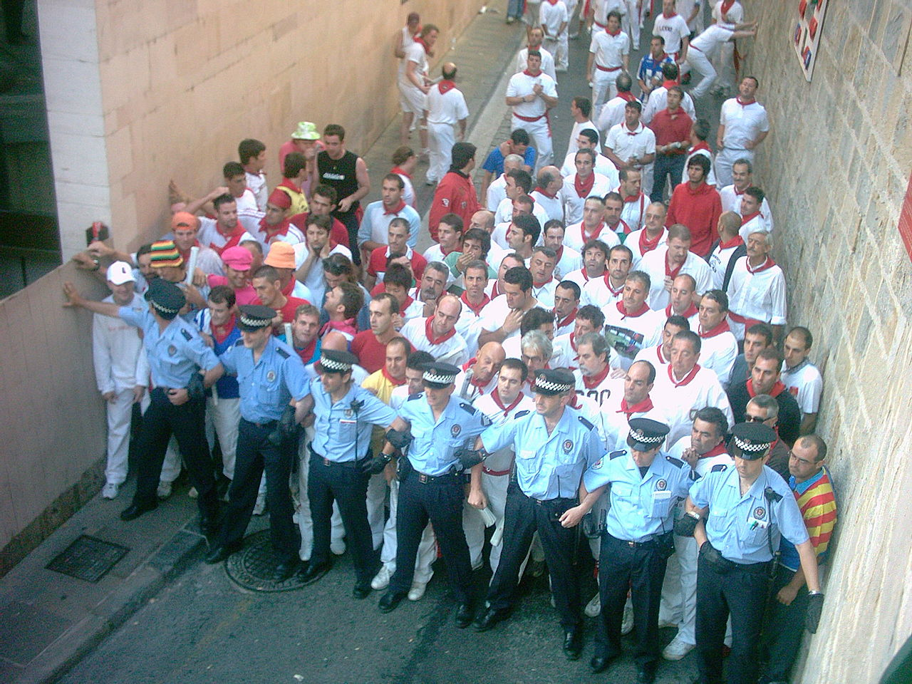

The Encierros
Procedure
From July 7 to 14, at 8.00 am, a rocket is set off to alert the runners that the corral gate is open. Before that, a prayer has been given at a statue of Saint Fermín, patron of the festival, to ask the saint's protection.
A second rocket signals that all six bulls have been released. The third and fourth rockets are signals that all of the herd has entered the bullring and its corral respectively, marking the end of the event.

The bulls
The herd is composed of the six bulls to be fought in the afternoon, six steers (castrated bulls) that run with the bulls, and three more steers that leave the corral two minutes later.

The average speed of the bulls is 25 km/h and they weight around 550 Kg on average. This means it is not possible to keep up with them for very long.
The route
The length of the run is 826 meters. It goes through four streets of the old part of the city (Santo Domingo, Town Hall Square, Mercaderes and Estafeta) and a section called Telefónica before entering into the bullring. The circuit has only changed slightly since 1852 as the former bullring was located close to the present one. Before that date the bullrunning ended in the "castle plaza", still not far from the present bullring.